Lagrangian Coherent Structures Toolbox User Guide
Contents
Introduction
The LCS toolbox is demonstrated by analyzing a double gyre flow:
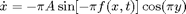
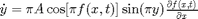
where
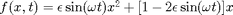
and 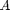, 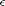 and 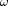 are constants. Further details are availaibe in DOI:10.1016/j.physd.2005.10.007, DOI:10.5194/npg-7-59-2000, and DOI:10.5194/npg-4-223-1997.
Flow definition
The flow vector field is defined as a symbolic function. The definition for the double gyre is:
t = sym('t'); x = sym('x'); y = sym('y'); p = struct('epsilon',.1,'a',.1,'omega',pi/5); forcing = p.epsilon*sin(p.omega*t)*x^2 + (1 - 2*p.epsilon... *sin(p.omega*t))*x; flow.symDerivative(1) = -pi*p.a*sin(pi*forcing)*cos(pi*y); flow.symDerivative(2) = pi*p.a*cos(pi*forcing).*sin(pi*y)... *(2*p.epsilon*sin(p.omega*t)*x + 1 - 2*p.epsilon*sin(p.omega*t));
The flow domain, timespan and resolution must be defined also:
flow = set_flow_domain([0 2; 0 1],flow); flow = set_flow_timespan([0 20],flow); flow = set_flow_resolution(uint64([2 1]*10),flow);
Flow animation
To verify that the flow has been correctly defined, it can be animated:
flow = animate_flow(flow);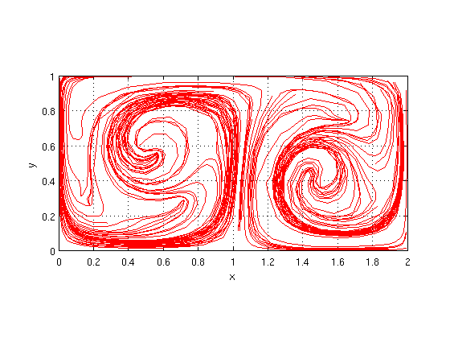
Parameters can be changed and the animation re-run. For example
flow = set_flow_timespan([0 30],flow); flow = set_flow_resolution(uint64([2 1]*20),flow); flow = animate_flow(flow);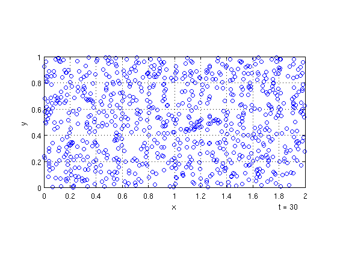
Hyperbolic barriers
Strainlines are computed based on a resolution representing a grid of initial conditions:
strainline = set_strainline_resolution(uint64([2 1]*5));
An integration time large enough to ensure strainline trajectories reach domain boundaries must be defined also:
strainline = set_strainline_final_time(10,strainline);
The following parameters are used to filter LCSs from all calculated strainlines. To start, these parameters are set to display all strainlines.
strainline = set_strainline_geodesic_deviation_tol(inf,strainline);
strainline = set_strainline_length_tol(0,strainline);
strainline.filteringMethod = 'hausdorff';
strainline = set_strainline_hausdorff_distance(0,strainline);
This specifies everything necessary. The function strain_lcs_script is used to calculate hyperbolic barriers:
doubleGyre = struct('flow',flow,'strainline',strainline); doubleGyre = strain_lcs_script(doubleGyre);
Geodesic deviation statistics: minimum = 1.73995e-50 maximum = 2.01744e+21 mean = 2.35442e+18 median = 1.86834e-05 Number of strainline segments: 45 Number of LCS segments: 45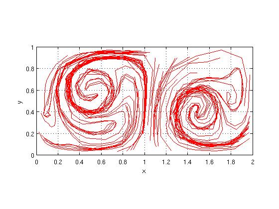
The strainlines appear quite jagged. To fix this, the flow resolution is increased and the ODE integration error tolerance decreased.
doubleGyre.flow = set_flow_resolution(uint64([2 1]*500),doubleGyre.flow);
doubleGyre.strainline = set_strainline_ode_solver_options(odeset('relTol',1e-6),doubleGyre.strainline);
doubleGyre = strain_lcs_script(doubleGyre);
Geodesic deviation statistics: minimum = 1.12418e-49 maximum = 1.02952e+15 mean = 1.3878e+12 median = 4.00551e-05 Number of strainline segments: 50 Number of LCS segments: 50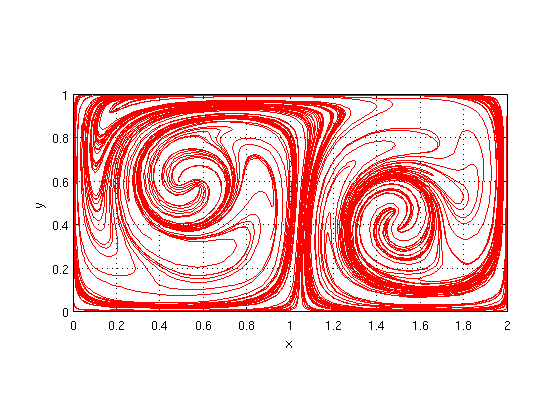
Filtering parameters are adjusted to pick out significant LCSs
doubleGyre.strainline = set_strainline_geodesic_deviation_tol(.05,doubleGyre.strainline); doubleGyre.strainline = set_strainline_length_tol(.5,doubleGyre.strainline); doubleGyre.strainline = set_strainline_hausdorff_distance(.5,doubleGyre.strainline); doubleGyre = strain_lcs_script(doubleGyre);
Geodesic deviation statistics: minimum = 1.12418e-49 maximum = 1.02952e+15 mean = 1.3878e+12 median = 4.00551e-05 Number of strainline segments: 191 Number of LCS segments: 9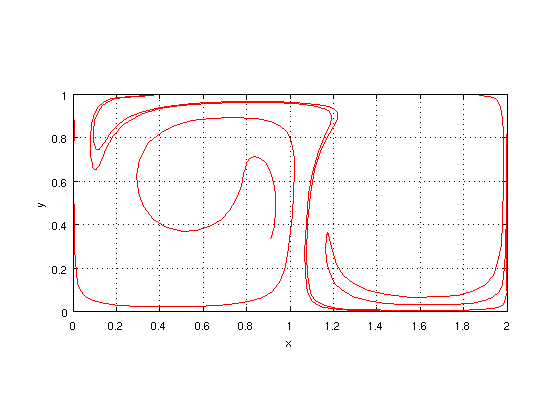